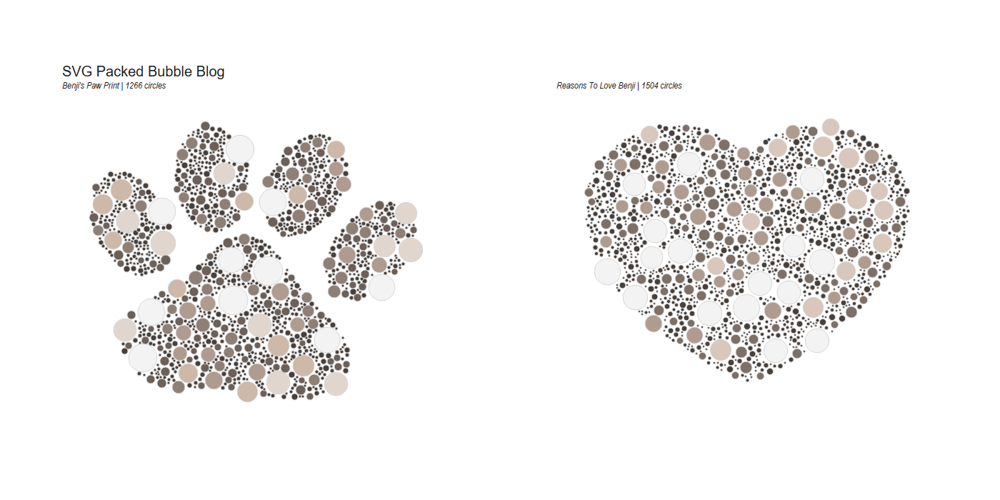
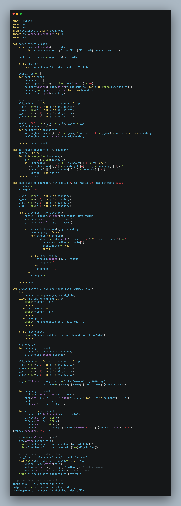
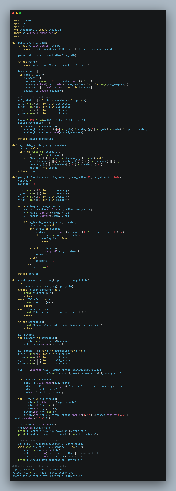
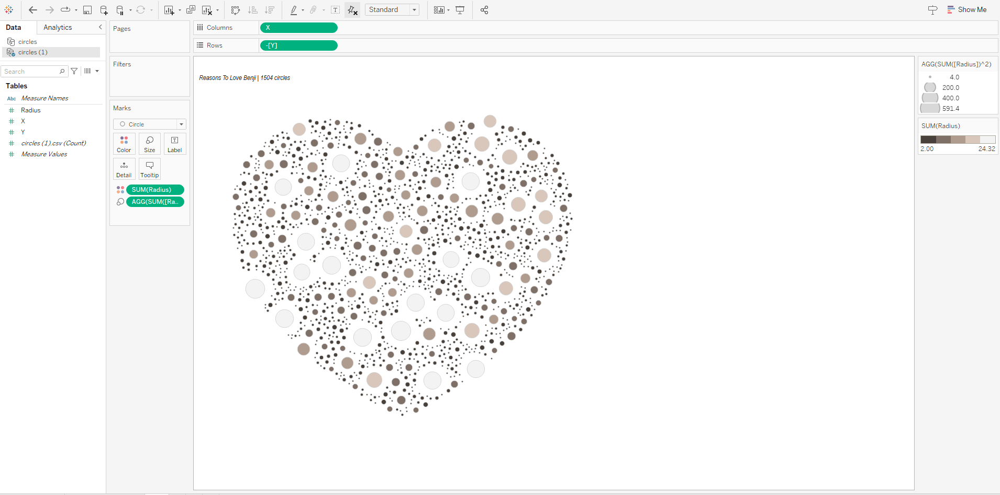
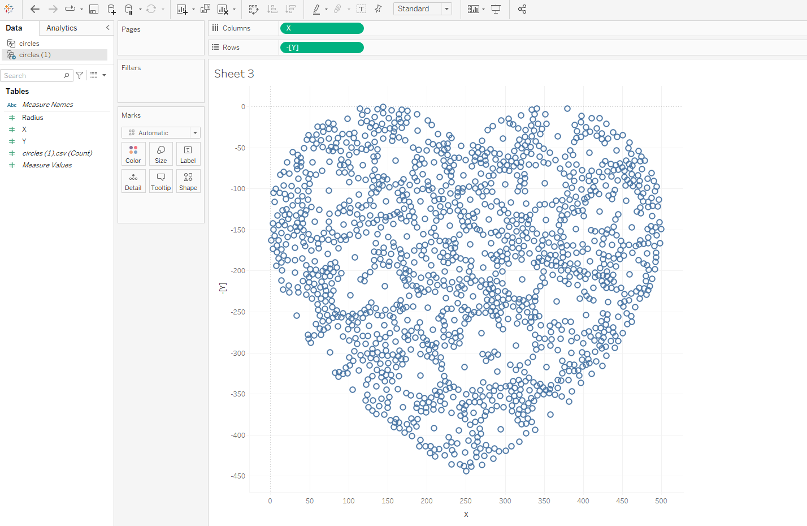
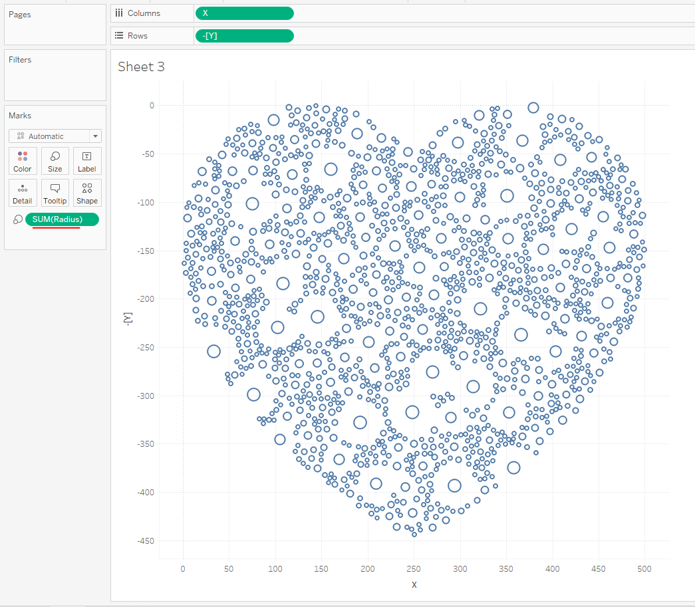
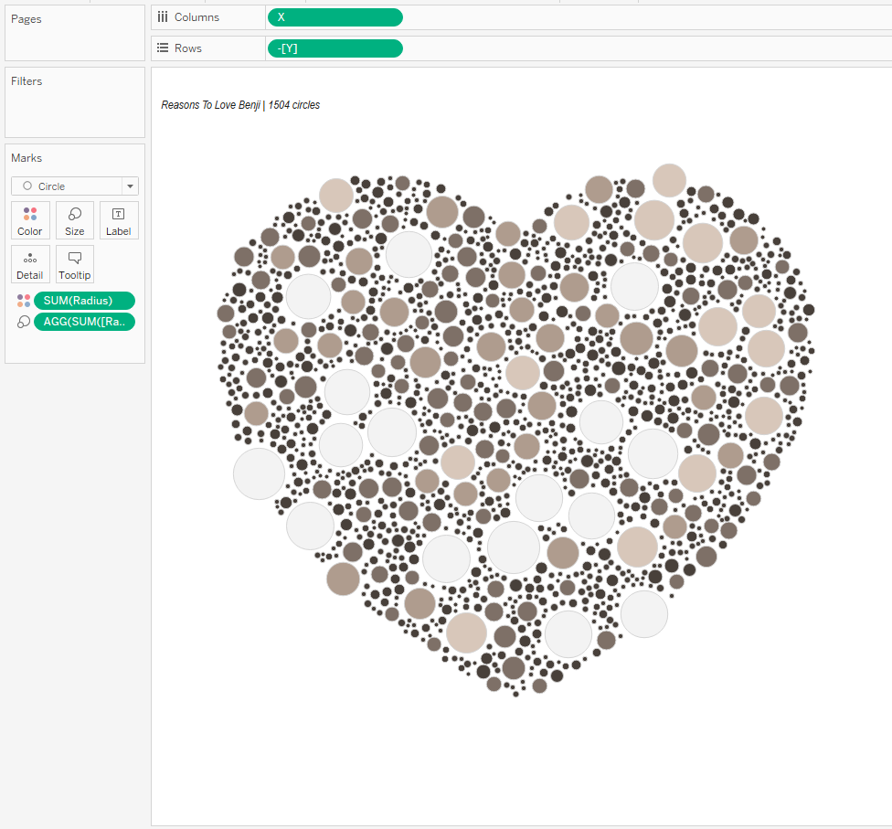

SVG Packed Bubbles In Tableau
Hi all, A fun data art style blog this week. This idea was heavily inspired from The Flerlage Twins btw. You can check out their blog here. It was written 5 years ago now and still works perfectly fine, but i wanted to give my own shapes a go, and to see if I could get some code of my own going. The way this blog will differ from the Twins is that we will look purely at Vector style SVG's. By that I mean filling a blank shape with packed circles.  It won't touch on some of the more artistic flair that the twins had with recreating actual pieces of art and assigning each of the different hex codes. For this to work, you will need.- An SVG file.
- The code out of the repository (and the abilility to run python code)
- Tableau (Optional)
{kind=link}
 What we want to end up with is a bunch of randomly packed bubbles in this heart vector.
What we want to end up with is a bunch of randomly packed bubbles in this heart vector. But then also I thought what if the vector is made up of multiple components, like this paw shape. So ended up revisiting the code to make sure that it takes the different "shapes" into account.

But then also I thought what if the vector is made up of multiple components, like this paw shape. So ended up revisiting the code to make sure that it takes the different "shapes" into account.

The code in the repo creates a new SVG image with packed circles inside a boundary defined by an input SVG file. Here's a breakdown of its main components and functionality:
- Imports: The code uses various libraries including random, math, os, svgpathtools, and xml.etree.ElementTree.
- parse_svg function:
- Reads an SVG file and extracts path information.
- Converts paths to a series of points (boundaries).
- Scales the boundaries to fit within a 500x500 area.
- is_inside_boundary function:
- Determines if a point (x, y) is inside a given boundary using the ray-casting algorithm.
- pack_circles function:
- Attempts to place circles of random sizes within a boundary.
- Ensures circles don't overlap and are fully within the boundary. (Note: You'll see that the circle centre is in the boundary not neccessarily the outer edge!)
- create_packed_circle_svg function:
- Main function that orchestrates the entire process.
- Parses the input SVG, packs circles in each boundary, and creates a new SVG with the packed circles.
- SVG creation:
- Uses xml.etree.ElementTree to construct the output SVG.
- Adds the original boundary paths and the new circles to the SVG.
- Assigns random colors to the circles.
- File handling:
- Reads from an input SVG file and writes the result to an output SVG file.
- Error handling:
- Includes try-except blocks to handle potential errors like file not found or invalid SVG content.
- Main execution:
- Sets input and output file paths.
- Calls create_packed_circle_svg function to generate the new SVG.
{kind=link}
{kind=link}
The code is just a matter of updating the input and output file.
It will print out a statement telling you the SVG has saved, and the number of circles created as part of it. It will then export the file required to re-build it in Tableau. TABLEAU The easy bit!  With your new exported file, connect to it in Tableau. Put X onto Columns and Y onto Row. You may need to flip the axis depending on your shape type.
Notice how the axis goes between 0 and 500, well we set that also within the code. To tidy it up in the sheet it's probably worth fixing your axis. On the Tableau report example attached at the top of the page you'll see i fix both axis between -50 and 500.

Adding Radius to size hasn't quite filled the gaps as we probably would like, so I opted for doing Radius^2.

& There we have it. A packed SVG shape in Tableau.
Going further:
- (hard) Why not try and amend the code so that you can configure how many circles you ideally want and it add and removes circles to reach that number.
- (intermediate) Try your own SVG file
- (easy) Amend the code to print more or less circles using the min and max radius.